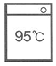

세탁기능사 (2009-07-12 기출문제)
1과목: 세정이론
1. 다음 중 유용성 오점에 해당하는 것은?
- 그리스
- 간장
- 점토
- 먼지
(정답률: 84%)

2. 다음 섬유 중 더러움이 가장 빨리 타는 것은?
- 레이온
- 모
- 아세테이트
- 비닐론
(정답률: 79%)
3. 스프링필터식 청정장치의 스프링에는 다음 중 어느 것이 부착되어 있는가?
- 규조토
- 분말세제
- 비닐수지
- 폴리우레탄
(정답률: 83%)
4. 드라이클리닝 석유계 용제의 장점은?
- 매 회마다 증류가 용이하여 용제를 관리하기 쉽다.
- 용해력이 약하고 비점이 낮아 저온건조가 가능하며 건조가 빠르다.
- 기름에 대한 용해도와 휘발성이 적정하며 안정적이다.
- 불연성이므로 화재 위험이 없다.
(정답률: 47%)
5. 청정제 종류와 뛰어난 성질과의 관계가 틀린 것은?
- 활성탄소-탈취
- 실리카겔-탈산
- 알루미나겔-탈취
- 산성백토-탈색
(정답률: 63%)
6. 청정장치의 종류 중 오염이 심한 용제의 청정에 적합한 것은?
- 필터
- 카트리지식
- 청정통식
- 증류식
(정답률: 85%)
7. 형광증백제에 대한 설명 중 옳은 것은?
- 형광증백제는 섬유상에 과도하게 염착되면 오히려 나쁜 효과가 생길 수도 있다.
- 대부분의 형광증백제는 염소계 표백제에 의해 증백능력을 상실한다.
- 증백효과는 증백제의 양에 따라 비례한다.
- 형광증백제는 섬유에 흡착되어 가시광선을 흡수하고 청색계 자외선을 복사한다.
(정답률: 51%)
8. 세제에 첨가되어 있는 표백제는?
- 과탄산나트륨
- 과산화수소
- 황산
- 셀룰로스
(정답률: 61%)
9. 가장 전문적 진단이 필요한 특수가공 제품은?
- 모피, 피혁 제품
- 안료 제품
- 날염 제품
- 합성섬유 제품
(정답률: 75%)
10. 기술진단의 포인트에 해당되지 않는 것은?
- 형태의 변형
- 가공표시
- 얼룩
- 부속품의 유무
(정답률: 77%)
11. 의류가 세정과정에서 용제 중에 분산된 더러움이 의류에 다시 부착되어 흰색이 약간 검게 보이는 현상은?
- 재오염
- 염색
- 염착
- 부착
(정답률: 75%)
12. 다음 중 물에 용해시켰을 때 이온화하지 않는 계면활성제는?
- 비이온 계면활성제
- 양이온 계면활성제
- 음이온 계면활성제
- 양성 계면활성제
(정답률: 69%)
13. 게이지 압력이 4kg/cm2인 보일러의 압력을 절대압력으로 계산하면?
- 5kg/cm2
- 4kg/cm2
- 3kg/cm2
- 2kg/cm2
(정답률: 89%)
14. 계면활성제의 종류 중에서 세제로 주로 사용되는 것은?
- 비이온 계면활성제
- 양성 계면활성제
- 음이온 계면활성제
- 양이온 계면활성제
(정답률: 89%)
15. 퍼크로에틸렌 용제의 단점이 아닌 것은?
- 용해력이 석유계 용제에 비하여 크므로 오점이 잘 빠지며 세정시간이 짧다.
- 독성이 강하다.
- 섬세한 의류에는 적합하지 않는 경우가 있다.
- 용제의 안정성이 낮아 열분해하여 기계의 부식이나 의류에 손상을 일으킨다.
(정답률: 56%)
16. 세정액의 청정화 방법이 아닌 것은?
- 흡착방법
- 증류방법
- 여과방법
- 중화방법
(정답률: 83%)
17. 패션케어(fashion care)서비스에 해당되지 않는 것은?
- 대상품의 보전성
- 대상품의 가치성
- 대상품의 청결성
- 대상품의 기능성 유지
(정답률: 65%)
18. 비누의 장점이 아닌 것은?
- 피부를 거칠게 하지 아니하고 합성세제보다 환경을 적게 오염시킨다.
- 가수분해되어 유리지방산을 생성한다.
- 거품이 잘 생기고 헹굴 때에는 거품이 사라진다.
- 세탁 효과가 우수하다.
(정답률: 81%)
19. 수용성 오점에 대한 설명 중 틀린 것은?
- 기름을 주성분으로 이루어진 것이다.
- 종류에는 간장, 겨자, 곰팡이 등이 있다.
- 물에 쉽게 녹는다.
- 물에 용해된 물질에 의하여 생긴 오점을 말한다.
(정답률: 84%)
20. 원통 보일러의 형식으로 옳은 것은?
- 수관보일러
- 주철보일러
- 연관보일러
- 특수보일러
(정답률: 75%)
2과목: 기술관리
21. 다림질의 3대 요소가 아닌 것은?
- 온도
- 수분
- 압력
- 전기
(정답률: 86%)
22. 다음 중 웨트클리닝 대상품이 아닌 것은?
- 합성수지 제품
- 고무를 입힌 제품
- 수지안료 가공 제품
- 아세테이트 제품
(정답률: 78%)
23. 세정공정 중 차지 시스템(charge system)에 대한 설명으로 옳은 것은?
- 용제 중에 소량의 물을 첨가하는 것이다.
- 여러 개의 용제탱크가 필요하다.
- 매회의 세정 때마다 세정액을 교체하여 새로이 씻는 방법이다.
- 소프를 첨가하지 아니하고 용제만으로 세탁하는 방식이다.
(정답률: 75%)
24. 론더링에서 알칼리제의 역할이 아닌 것은?
- 산성비누의 생성을 방지한다.
- 경수를 연화한다.
- 변질된 당이나 단백질을 제거한다.
- 황변을 방지한다.
(정답률: 50%)
25. 일반적으로 가장 많이 사용하는 모직물 양복의 세탁법은?
- 물세탁
- 론더링
- 드라이클리닝
- 웨트클리닝
(정답률: 76%)
26. 론더링 공정의 순서가 옳은 것은?
- 예세→본세→표백→헹굼→산세→증백→푸새→건조
- 예세→본세→헹굼→산세→표백→증백→푸새→건조
- 예세→헹굼→본세→산세→표백→푸새→증백→건조
- 예세→헹굼→표백→산세→본세→푸새→증백→건조
(정답률: 81%)
27. 다음 중 세정율이 가장 높은 섬유는?
- 견
- 양모
- 면
- 마
(정답률: 80%)
28. 얼룩빼기의 주의점 중 틀린 것은?
- 얼룩빼기 시 생기는 반점을 제거해야 한다.
- 얼룩빼기 시 기계적 힘을 심하게 가해야 한다.
- 얼룩빼기 후에는 뒤처리를 반드시 행하여 섬유 손상을 방지해야 한다.
- 얼룩이 주위로 번져 나가지 않도록 해야 한다.
(정답률: 73%)
29. 다림질 후에 바지주름이 한 쪽으로 삐뚤어져 있다. 그 원인에 가장 해당되는 것은?
- 주머니 다림질이 생략되었기 때문
- 바지의 다림질 온도가 맞지 않아서
- 바짓가랑이의 양쪽 봉제선이 불일치하기 때문
- 물세탁을 하여 바지 길이가 줄었기 때문
(정답률: 67%)
30. 드라이클리닝 마무리 기계의 종류 중 성질이 다른 것은?
- 스팀형
- 폼머형
- 프레스형
- 카드리지형
(정답률: 64%)
31. 모든 섬유에 적당한 세탁액의 온도는?
- 10~20℃
- 35~40℃
- 50~60℃
- 80~90℃
(정답률: 82%)
32. 다음 중 삶아 빨기에 적당한 의류는?
- 흰 폴리에스테르 와이셔츠
- 흰 나일론 양말
- 흰 아세테이트블라우스
- 흰면 속옷
(정답률: 73%)
33. 다음 중 다림질 작업시의 주의점으로 틀린 것은?
- 보일러의 물을 자주 교체하여 다리미에서 녹물이 나오지 않도록 한다.
- 진한 색상의 의복은 섬유 소재에 관계없이 천을 덮고서 다린다.
- 편성물은 인체프레스기를 사용하면 회복불가 정도로 늘어진다.
- 섬유의 적정온도보다 다리미 온도가 낮으면 황변이 일어날 수 있다.
(정답률: 58%)
34. 우리나라에서 가장 많이 사용하는 경도 표시법은?
- 미국 경도
- 영국 경도
- ppm
- 프랑스 경도
(정답률: 77%)
35. 다음 중 열에 가장 약한 섬유는?
- 나일론
- 양모
- 비스코스레이온
- 면
(정답률: 52%)
36. 합성피혁에 주로 사용되는 수지는?
- 폴리우레탄
- 폴리아크릴
- 폴리에스테르
- 폴리펠티드
(정답률: 72%)
37. 피혁에 대한 설명으로 틀린 것은?
- 화학적 조성은 콜라겐이라는 섬유상 단백질로 되어 있다.
- 열에 약해서 55℃ 이상의 온도에서는 굳어지고 수축된다.
- 보관은 건조하고 신선한 곳에 보관한다.
- 물세탁과 드라이클리닝을 쉽게 할 수 있다.
(정답률: 72%)
38. 3대 합성 섬유에 해당되지 않는 것은?
- 나일론
- 스판텍스
- 아크릴
- 폴리에스테르
(정답률: 74%)
39. 양모섬유를 비눗물 중에서 비비면 서로 엉키기 쉬워 세탁할 때 특히 주의해야 한다. 이것은 주로 양모의 어떤 형태 구조 때문인가?
- 스케일
- 천연꼬임
- 케라틴
- 세리신
(정답률: 65%)
40. 양모섬유로 된 내의를 세탁할 때 부주의로 인해서 많이 줄어드는 주된 원인은?
- 케라틴이라는 단백질로 되어 있기 때문이다.
- 탄성이 좋기 때문이다.
- 표피층에 스케일 구조를 가지고 있기 때문이다.
- 분자 구조 중 조염결함을 갖고 있기 때문이다.
(정답률: 56%)
3과목: 클리닝대상품
41. 양털에 있어서 축융성과 가장 관계가 있는 것은?
- 파라 내섬유
- 켐프
- 겉비늘과 크림프
- 오르토 내섬유
(정답률: 70%)
42. 다음 중 천연 식물성 섬유가 아닌 것은?
- 면
- 모시
- 아마
- 비스코스레이온
(정답률: 82%)
43. 합성섬유의 방사법으로 가장 많이 사용되는 것은?
- 건식방사
- 습식방사
- 용융방사
- 에멀션방사
(정답률: 57%)
44. 우리나라에서 주로 사용하고 있는 면섬유는?
- 이집트면
- 수단면
- 미국면
- 인도면
(정답률: 65%)
45. 섬유의 세탁방법에 대한 표시기호에 대한 뜻으로 틀린 것은?

- 물의 온도 95℃를 표준으로 세탁 할 수 있다.
- 세제의 종류에 제한을 받지 않는다.
- 세탁기에 의하여 세탁할 수 없다.
- 삶을 수 있다.
(정답률: 69%)
46. 다음 중 면섬유의 주성분에 해당되는 것은?
- 셀룰로스
- 케라틴
- 피브로인
- 펙틴질
(정답률: 76%)
47. 다음 중 세탁견뢰도가 가장 우수한 것은?
- 2급
- 3급
- 4급
- 5급
(정답률: 89%)
48. 다음 중 비중이 가장 작은 섬유는?
- 폴리에스테르
- 폴리프로필렌
- 폴리우레탄
- 폴리아미드
(정답률: 70%)
49. 접착 심지의 설명으로 틀린 것은?
- 다리미 또는 프레스 처리만으로 접착시킬 수 있다.
- 봉제 방법이 간단하다.
- 겉감의 신축성을 감소시킬 수 있기 때문에 형태안정성이 증진된다.
- 내세탁성이 약하다.
(정답률: 69%)
50. 다음 중 파일직물이 아닌 것은?
- 벨벳
- 코듀로이
- 우단
- 개버딘
(정답률: 72%)
51. 다음 중 평직물에 해당되는 것은?
- 광목
- 서지
- 공단
- 벨벳
(정답률: 87%)
52. 양모섬유에 가장 친화성이 좋은 염료는?
- 황화염료
- 산성염료
- 배트염료
- 형광염료
(정답률: 82%)
53. 안전 다림질 온도가 가장 높은 섬유는?
- 나일론
- 양모
- 마
- 견
(정답률: 74%)
54. 양모섬유의 특징이 아닌 것은?
- 마디가 있고 광택이 좋다.
- 흡수성과 신축성이 좋다.
- 스케일이 있어 방축가공에 용이하다.
- 다공성이 커서 보온성이 좋다.
(정답률: 55%)
55. 오점의 종류가 아닌 것은?
- 유용성 오점
- 무용성 오점
- 수용성 오점
- 불용성 오점
(정답률: 84%)
4과목: 공중위생법규
56. 공중위생감시원의 자격이 아닌 것은?
- 위생사 또는 환경기사 2급 이상의 자격이 있는 자
- 대학에서 화학·화공학·환경공학 또는 위생학 분야를 전공하고 졸업한 자
- 외국에서 위생사 또는 환경기사 면허를 받은 자
- 1년 이상 공중위생 행정에 종사한 경력이 있는 자
(정답률: 54%)
57. 다음 중 공중위생관리법 시행규칙을 개정할 수 있는 자는?
- 대통령
- 도지사
- 시장·군수
- 보건복지가족부장관
(정답률: 62%)
58. 세탁업을 하고자 하는 자는 공중위생영업의 종류별로 보건복지가족부령이 정하는 시설 및 설비를 갖추고 시장·군수·구청장에게 어떤 절차를 받아야 하는가?
- 허가
- 인가
- 신고
- 등록
(정답률: 80%)
59. 다음 중 공중위생영업자의 위생교육 시간은?
- 1개월마다 4시간
- 6개월마다 4시간
- 매년 4시간
- 2년마다 4시간
(정답률: 72%)
60. 다음 중 공중위생감시원의 업무범위가 아닌 것은?
- 시설 및 설비의 확인
- 영업자준수사항 이행 여부의 확인
- 영업자의 기술자격 인정 여부 확인
- 위생지도 및 개선명령 이행 여부의 확인
(정답률: 55%)